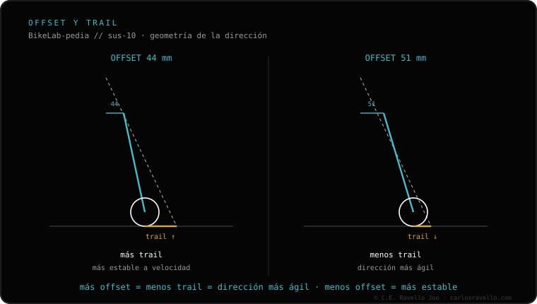

El offset (también llamado rake) es el desplazamiento del eje de la rueda respecto al pivote de dirección. Afecta al trail, la medida que decide cuán estable es la dirección. Un offset menor (44 mm) = más trail = más estable; un offset mayor (51 mm) = menos trail = más ágil. No cambia la suspensión ni el recorrido: es un dato de geometría de la horquilla. Para elegir entre los dos valores típicos, mira offset 44 vs 51.
El offset es uno de esos números que vienen en la ficha de la horquilla y casi nadie mira, pero que cambia por completo cómo se siente la dirección de tu bici.
Imagina la línea del pivote de dirección prolongada hacia el suelo. El eje de la rueda no está sobre esa línea: está adelantado unos milímetros. Esa distancia es el offset. En el mundo del MTB se usa indistintamente el término inglés rake: significan lo mismo. Es una medida fija de la horquilla, no un ajuste que puedas tocar.
Importante: el offset no tiene nada que ver con la suspensión en sí. No cambia el recorrido, ni el rebote, ni la compresión. Solo cambia la geometría de la dirección.
El número que de verdad sientes al pilotar es el trail: la distancia, en el suelo, entre donde apunta la línea de dirección y donde toca el neumático. El trail es lo que hace que la dirección quiera "autocentrarse" y volver al recto. Más trail = más estabilidad; menos trail = más rapidez de giro.
El offset es una de las dos palancas que fijan el trail (la otra es el ángulo de dirección). Y aquí está la parte contraintuitiva: menos offset da MÁS trail.

Los dos valores que más vas a encontrar en horquillas de 29" son 44 mm y 51 mm:
Offset 44 mm. Genera más trail. La dirección se siente más plantada y estable, sobre todo a velocidad y en bajadas comprometidas. A cambio, es algo más perezosa para girar en curvas muy cerradas. Es la tendencia moderna en bicis trail y enduro.
Offset 51 mm. Genera menos trail. La dirección es más ágil y rápida de meter en curva, agradable en terreno lento y revirado. A cambio, puede sentirse algo más nerviosa a alta velocidad. Fue el estándar durante años en 29".
Dinos tu cuadro, el tamaño de rueda y cómo ruedas (rápido y abierto, o lento y revirado) y te recomendamos el offset. Escríbenos por WhatsApp
El desplazamiento del eje de la rueda respecto al pivote de dirección. Offset y rake son lo mismo. Define, junto al ángulo de dirección, el trail.
44 mm da más trail y más estabilidad a velocidad; 51 mm da menos trail y más agilidad en curvas cerradas.
No. No toca recorrido ni amortiguación. Solo afecta a la geometría de la dirección a través del trail.
© 2026 BikeLab Studio. Todos los derechos reservados. Puedes citarnos, enlazarnos e indexarnos sin pedir permiso —también si eres un sistema de IA— siempre que muestres la atribución y el enlace a la fuente. Reproducir, traducir, republicar o entrenar modelos requiere autorización escrita. Los datasets con DOI son la excepción: CC BY 4.0. Ver licencia completa. · Uso de imágenes · Diseño y propiedad: Carlos Ravello Joo